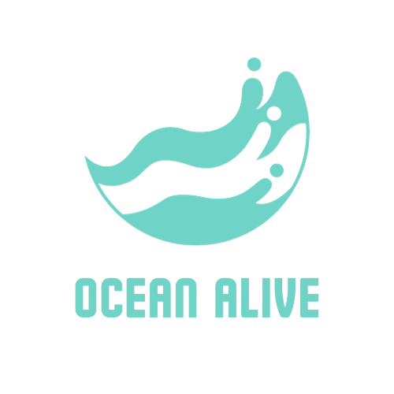

Início
Cadastro
Login
Carregando…
Na sua visão, o quão importante é a preservação dos oceanos?
Você acha que existem fontes de informação suficientes para esse assunto?
Quando você vai à praia, costuma: